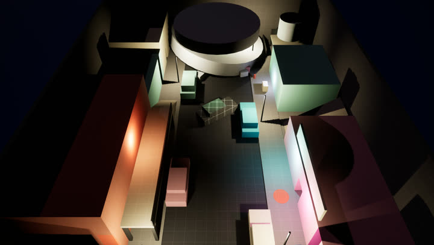
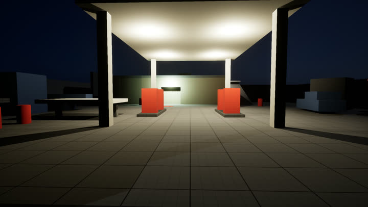

Two more sets, and one that built itself three times
A gas station and a 1950s main street went up as greybox sets from kit scripts in the first filming block. The gas station turned out to hold three copies of itself.
Day 1, Thu 12 NovHour 3
Reel Time is a run of film sets, one per invented B-movie. This morning's first filming block caught two of them standing: a zombie picture and a flying-saucer picture, both still in greybox.
Saucers Over Millbrook
A 1950s main street at night, 52 by 30 metres, with stage walls round it. The enemies in this film will fire slow plasma bolts you can see coming, so the street is built as lanes of fire: long sight lines to cross, parked cars to slide behind, and red walls in an alley to kick between when you need to change lane.
 Where the player starts. Pastel shopfronts, staggered cars for cover, the crashed saucer closing the far end and a second one overhead.
Where the player starts. Pastel shopfronts, staggered cars for cover, the crashed saucer closing the far end and a second one overhead. The wide camera mark. The hotel balcony on the left is where two enemies will shoot down the street.
The wide camera mark. The hotel balcony on the left is where two enemies will shoot down the street.
The overhead mark. The red disc by the pink diner is the mark the player finishes on.


Dead Mile Motel
A roadside gas station, 44 by 40 metres, fenced all round. You start on the road looking straight at the first two zombies under the canopy lights, because the player reads the room while time is stopped. The red blocks are pumps and barrels that will explode later.

The player start. Four red pump placeholders under the canopy, the shop door lit behind them. The low camera mark, at floor level among the pumps.
The low camera mark, at floor level among the pumps. The overhead mark, which mostly films the top of the canopy. It needs moving.
The overhead mark, which mostly films the top of the canopy. It needs moving.


The film was first called "Dead by Dawn Part II" in the task. The Director changed it within half an hour: too close to a real title, and the jam rules don't allow other people's IP.
The level that tripled
A kit is meant to be safe to rerun: it wipes its own pieces, then rebuilds. On these levels the wipe only saw the actors that were loaded. Unreal's World Partition leaves the last run's actors unloaded when a map is reopened, so each rerun built a fresh level on top of the old one. By the time the Engine session filmed the gas station, its capture note read:
"The level currently holds 3 copies of most cameras and probably of the geometry."
You can't see it in the clip, because the copies sit exactly on top of each other. A zombie wave spawning three times over would have been easier to spot.
The second World session fixed the kits at 07:16 to load every actor before wiping and to fail if anything is duplicated. A Floater session added the same check to the level validator, so stacked meshes now fail a build instead of hiding in it. The Engine has been asked to rerun all four level kits after this block, and the gas station should be filmed again at 09:30.